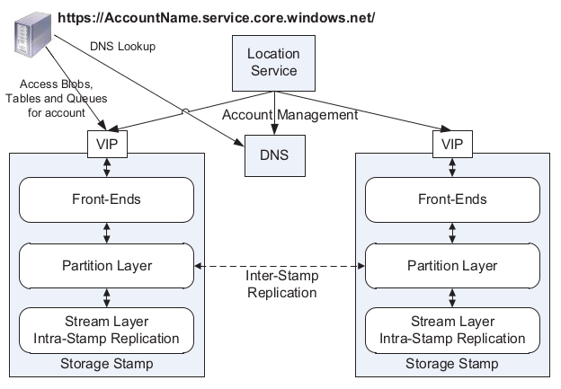

Paper Index
目录
- 1. Distributed System
- 1.1. Google
- 1.1.1. The Google File System (SOSP03)
- 1.1.2. Map Reduce: Simplified Data Processing On Large Clusters
- 1.1.3. Bigtable: A Distributed Storage System for Structured Data
- 1.1.4. The Chubby lock service for loosely-coupled distributed systems
- 1.1.5. Dapper, a Large-Scale Distributed Systems Tracing Infrastructure
- 1.1.6. Percolator: Large-scale Incremental Processing Using Distributed Transactions and Notifications
- 1.1.7. Megastore: Providing Scalable, Highly Available Storage for Interactive Services
- 1.1.8. Spanner: Google's Globally-Distributed Database
- 1.1.9. F1: A Distributed SQL Database That Scales
- 1.1.10. Goods: Organizing Google's Datasets
- 1.1.11. Colossus: Next generation of GFS
- 1.2. Microsoft
- 1.3. Tencent
- 1.4. ceph
- 1.5. HDFS
- 1.6. Consensus Algorithms
- 1.6.1. Lamport The Part-Time Parliament
- 1.6.2. Lamport The Byzantine General Problem
- 1.6.3. Lampson How to Build a Highly Availability System using Consensus
- 1.6.4. Revisiting the Paxos Algorithm
- 1.6.5. Paxos made simple
- 1.6.6. Cheap Paxos
- 1.6.7. Fast Paxos
- 1.6.8. Paxos Made Live - An Engineering Perspective
- 1.6.9. Raft - In Search of an Understandable Consensus Algorithm
- 1.6.10. Consensus: Bridging theory and practice
- 1.6.11. ViewStamped Replications
- 1.7. Transactions
- 1.8. Distributed base
- 1.8.1. Dijkstra Solution of a Problem in Concurrent Programming Control
- 1.8.2. Dijkstra Self-stabilizing Systems in Spite of Distributed Control
- 1.8.3. Jim Gray Why Do Computers Stop and What Can Be Done About It?
- 1.8.4. A New Solution of Dijkstra's Concurrent Programming Problem
- 1.8.5. Lamport Time, Clocks, and the Ordering of Events in a Distributed System
- 1.8.6. Distributed Snapshots - Determining Global States of a Distributed System
- 1.8.7. Virtual Time and Global States of Distributed Systems
- 1.8.8. Impossibility of Distributed Consensus with One Faulty Process
- 1.1. Google
- 2. Unsorted
- 3. Reference Websites
最新列表参见Github仓库：https://github.com/yygcode/papers
1 Distributed System
1.1 Google
1.1.1 The Google File System (SOSP03)
EN, CN, PDF, Reading Notes.
GFS是分布式存储领域非常著名的一篇论文。HDFS、阿里云Pangu存储系统，都是参考论文实现的。核心思想是：
- 使用Paxos/RAFT一致性组实现高可用的Master，负责文件系统元数据，且全部元数据常驻内存；
- 使用ChunkServer提供单机引擎，只支持AppendOnly写入，IO数据不过Master；
- 使用SDK提供类POSXI文件系统接口，封装Master/ChunkServer交互过程。
GFS有Master热点，集群QPS有数万，不适合保存海量小文件。海量小文件的需求，应该在GFS基础之上搭建一款文件系统，而用GFS实现Bootstrap。
为支持超大规模集群，GFS可以用单集群多组Master，这称为联邦（Fedoration），HDFS 有文章描述这部分：https://hadoop.apache.org/docs/current/hadoop-project-dist/hadoop-hdfs/Federation.html
GFS在Google内部演进为分布式元数据以支持更大规模集群，内部产品代号Colossus，但没有具体的论文发出来。在网上可以找到这篇链接： https://www.systutorials.com/colossus-successor-to-google-file-system-gfs/ 部分内容节抄如下：
- "We also ended up doing what we call a "multi-cell" approach, which basically
made it possible to put multiple GFS masters on top of a pool of chunkservers."
- "We also have something we called Name Spaces, which are just a very static
way of partitioning a namespace that people can use to hide all of this from the actual application." … "a namespace file describes"
- "The distributed master certainly allows you to grow file counts, in line
with the number of machines you’re willing to throw at it." … "Our distribute master system that will provide for 1-MB files is essentially a whole new design. That way, we can aim for something on the order of 100 million files per master. You can also have hundreds of masters."
- BigTable "as one of the major adaptations made along the way to help keep
GFS viable in the face of rapid and widespread change."
- GFS: Evolution on Fast-forward: https://queue.acm.org/detail.cfm?id=1594206
- Google File System II: Dawn of the Multiplying Master Nodes : https://www.theregister.com/2009/08/12/google_file_system_part_deux/
- http://tab.d-thinker.org/showthread.php?tid=1&pid=332#pid332
1.1.2 Map Reduce: Simplified Data Processing On Large Clusters
PDF.
1.1.3 Bigtable: A Distributed Storage System for Structured Data
PDF, Reading Notes. 借助Chubby实现选主、Tablet三层结构、Client缓存更新机制、LSM数据引擎，对于存储系统的实现有很好的借鉴意义。
1.1.4 The Chubby lock service for loosely-coupled distributed systems
PDF.
1.1.5 Dapper, a Large-Scale Distributed Systems Tracing Infrastructure
PDF.
1.1.6 Percolator: Large-scale Incremental Processing Using Distributed Transactions and Notifications
PDF.
1.1.7 Megastore: Providing Scalable, Highly Available Storage for Interactive Services
PDF.
1.1.8 Spanner: Google's Globally-Distributed Database
PDF.
1.1.9 F1: A Distributed SQL Database That Scales
PDF.
1.1.10 Goods: Organizing Google's Datasets
PDF.
1.1.11 Colossus: Next generation of GFS
论文未发表，整理各处搜集来的资料。
- Google File System II: Dawn of the Multiplying Master Node
- https://www.theregister.com/2009/08/12/google_file_system_part_deux/
1.2 Microsoft
1.2.1 Window Azure Storage
Windows Azure Storage: A Highly Available Cloud Storage Service with Strong Consistency. PDF.
Window Azure Storage论文描述了微软云存储系统，该系统提供了文件(blob), 表格(table), 队列(queue)存储产品。Blob类似阿里云OSS，Table类似阿里云OTS/TableStore，Queue类似阿里云MessageQueue。
WAS提供URL访问接口：
http(s)://AccountName.<service>.core.windows.net/PartitionName/ObjectName <service> is blob, table or queue.
WAS顶层架构如下:

- Stream Layer: 分布式文件系统；SM(StreamManager)维护元数据，基于Paxos算法实现高可用；EN(ExtentNode)提供AppendOnly数据服务；类似GFS/HDFS/PANGU；
- Partition Layer: LSM-Tree结构；可扩展对象命名空间；给对象提供事务顺序和强一致性；保存数据到Stream Layer；缓存高频数据；
- Front-End(FE) Layer: 鉴权(auth), 之后路由Requests到PartitionServer；FE缓存 PartitionMap，直接向StreamLayer发送大对象数据，缓存高频数据；
StreamLayer提供同步的Replication, PartitionLayer提供异步的Replication。
1.2.2 Pelican: A building block for exascale cold data storage
Pelican: A building block for exascale cold data storage.
1.4 ceph
1.4.1 Ceph: A Scalable, High-Performance Distributed File System
PDF.
1.4.2 CRUSH
PDF.
1.4.3 File Systems Unfit as Distributed Storage Backends: Lessons from 10 Years of Ceph Evolution
PDF.
1.5 HDFS
1.5.1 The Hadoop Distributed File System
PDF.
1.5.2 HDFS: Balancing Portability and Performance
PDF.
1.6 Consensus Algorithms
1.6.1 Lamport The Part-Time Parliament
PDF.
1.6.2 Lamport The Byzantine General Problem
PDF.
1.6.3 Lampson How to Build a Highly Availability System using Consensus
PDF.
1.6.4 Revisiting the Paxos Algorithm
PDF.
1.6.5 Paxos made simple
PDF.
1.6.6 Cheap Paxos
PDF.
1.6.7 Fast Paxos
PDF.
1.6.8 Paxos Made Live - An Engineering Perspective
PDF.
1.6.9 Raft - In Search of an Understandable Consensus Algorithm
PDF.
1.6.10 Consensus: Bridging theory and practice
PDF.
1.6.11 ViewStamped Replications
PDF.
1.7 Transactions
1.7.1 Two Phase Commit
1.7.2 Nonblocking Commit Protocols
PDF.
1.7.3 Consensus on Transaction Commit
1.7.4 Revisiting the relationship between non-blocking atomic commitment and consensus
1.8 Distributed base
1.8.1 Dijkstra Solution of a Problem in Concurrent Programming Control
PDF.
1.8.2 Dijkstra Self-stabilizing Systems in Spite of Distributed Control
PDF.
1.8.3 Jim Gray Why Do Computers Stop and What Can Be Done About It?
PDF.
1.8.4 A New Solution of Dijkstra's Concurrent Programming Problem
PDF.
1.8.5 Lamport Time, Clocks, and the Ordering of Events in a Distributed System
PDF.
1.8.6 Distributed Snapshots - Determining Global States of a Distributed System
PDF.
1.8.7 Virtual Time and Global States of Distributed Systems
PDF.
2 Unsorted
- 2020-11-12 分布式论文集
- 2020-11-12 Sitemap for project papers
- 2019-04-03 The Design and Implementation of a Log-Structured File System
- 2019-04-03 In Search of an Understandable Consensus Algorithm (Extended Version)
- 2019-04-03 Raft一致性算法论文译文
- 2019-04-01 The Hadoop Distributed Filesystem
- 2019-03-31 MapReduce: Simplified Data Processing on Large Clusters
- 2019-03-31 Google文件系统
- 2019-03-18 File Systems Unfit as Distributed Storage Backends : Lessons from 10 Years of Ceph Evolution
- 2019-03-18 The Google File System
- 2019-03-18 The Adaptive Radix Tree – ARTful Indexing for Main-Memory Databases
3 Reference Websites
- https://github.com/mmcgrana/services-engineering
- MIT 6.824: https://pdos.csail.mit.edu/6.824/
- Standford-CS244b: http://www.scs.stanford.edu/20sp-cs244b/
- UC Berkeley-CS294-91: https://people.eecs.berkeley.edu/~alig/cs294-91/
- CMU-15-440: http://www.cs.cmu.edu/~srini/15-440/
- Lamport Homepage: https://lamport.azurewebsites.net/
- Reading List: https://dancres.github.io/Pages/
- Notes: notes.html